공통 기준
목적 달성에 꼭 필요한 조건
- 사용 목적
- 반드시 포함할 요소
- 사용 환경과 완료 기준
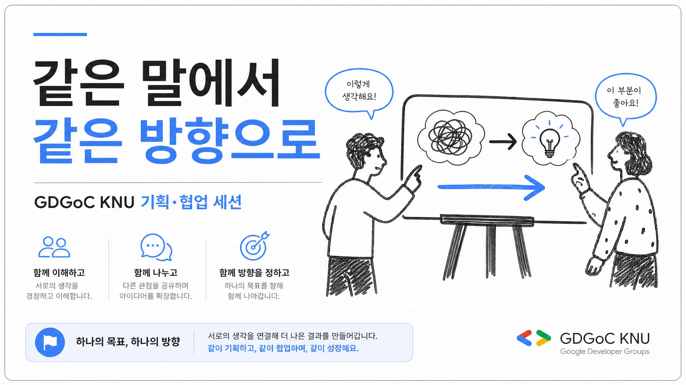
GDGoC KNU 교육 세션
같은 목표를 함께 이해하고 실행하는 방법
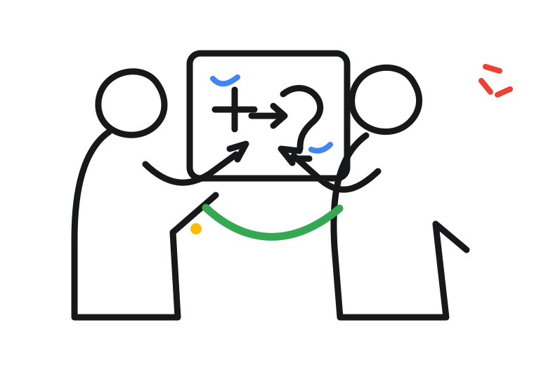
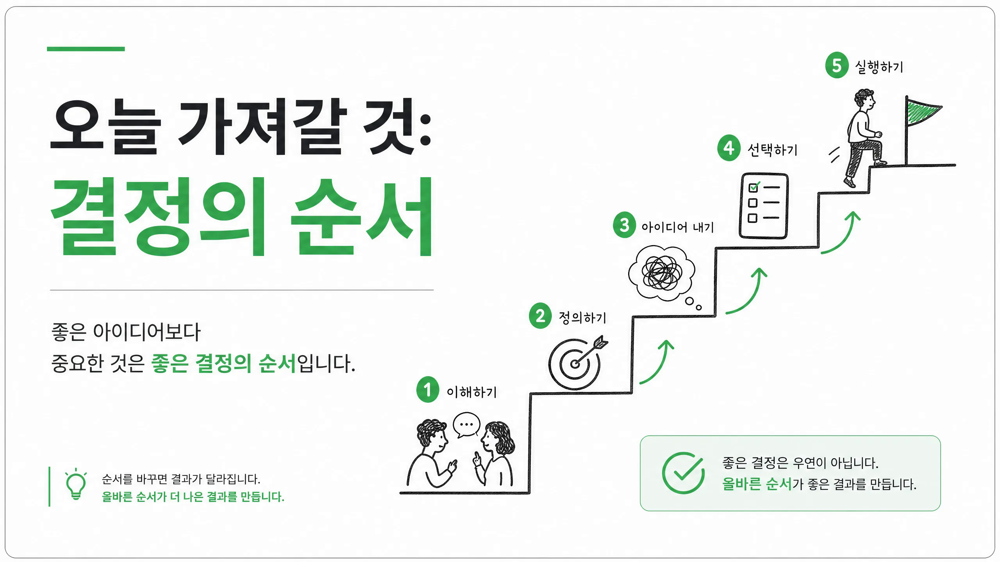
GDGoC KNU 교육 세션
프로젝트가 흔들릴 때 사람을 탓하기 전에 무엇을 확인해야 하는지 배웁니다.
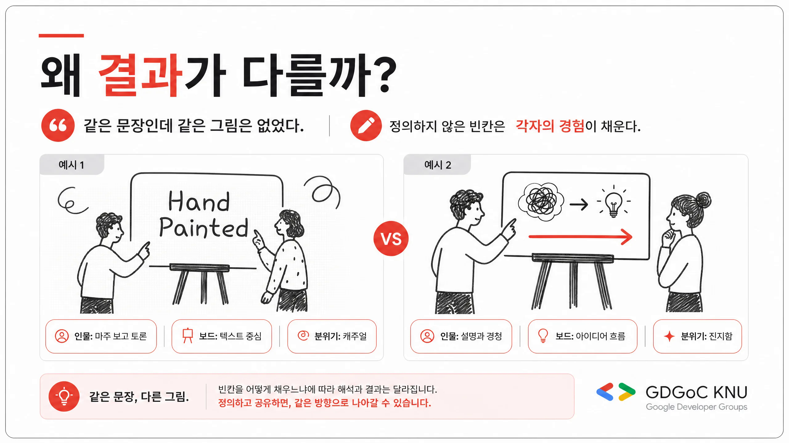
기획의 경계
목적 달성에 꼭 필요한 조건
담당자가 판단하고 제안할 수 있는 부분
실제 협업 사례
첫 회의에서는 기능 개수만 보고 하나씩 나눴습니다.
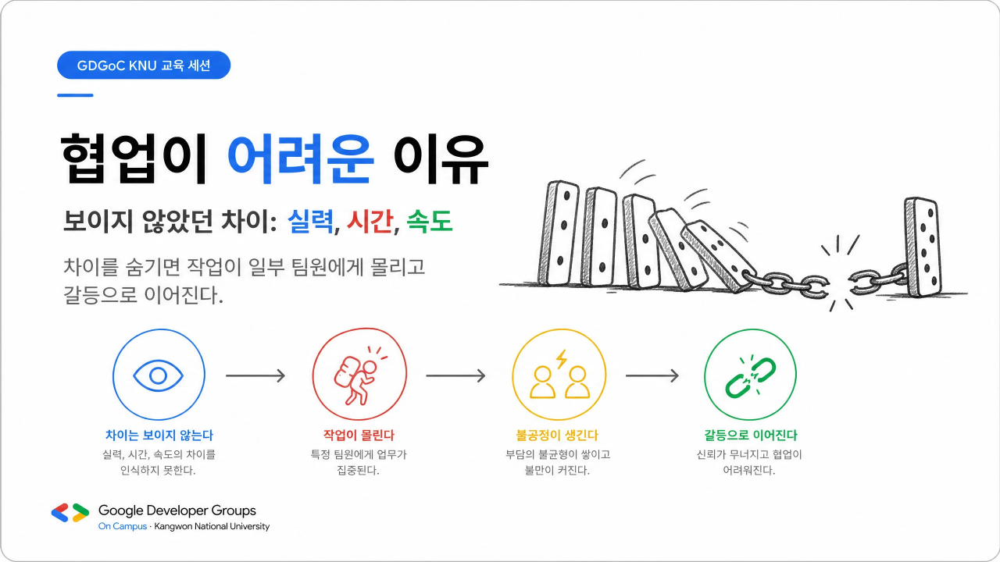
실패의 구조
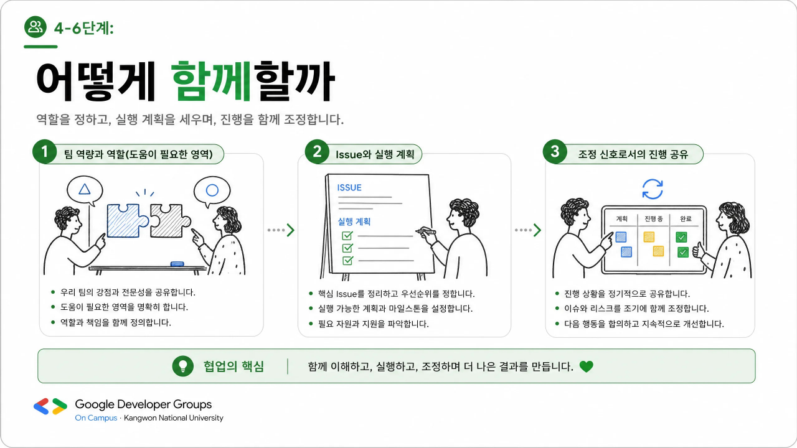
같은 사람, 다른 운영 방식
각자의 상황과 막힘을 늦게 발견했습니다.
가능한 시간과 도움이 필요한 영역을 먼저 말했습니다.
이번 주에 반드시 동작할 사용자 흐름을 정했습니다.
범위, 순서, 지원 방식을 일찍 조정했습니다.
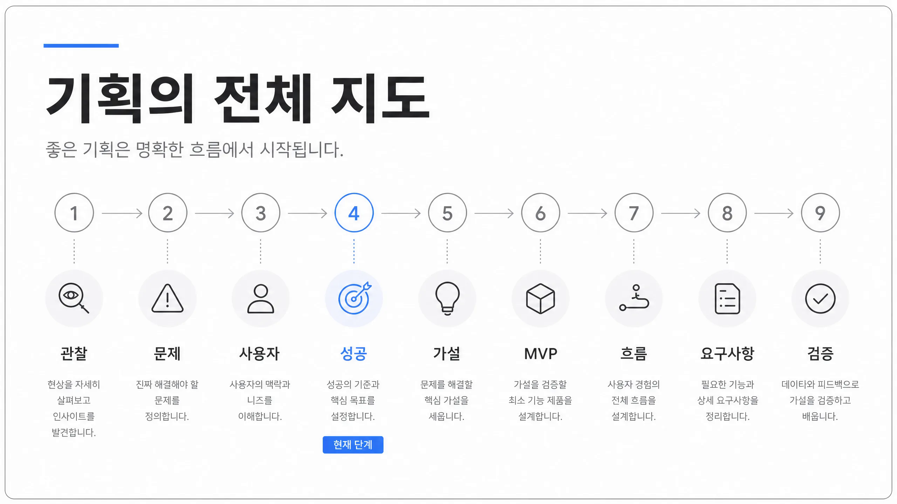
프로젝트 운영 지도
새로운 사실을 발견하면 앞 단계의 결정도 다시 고칩니다.
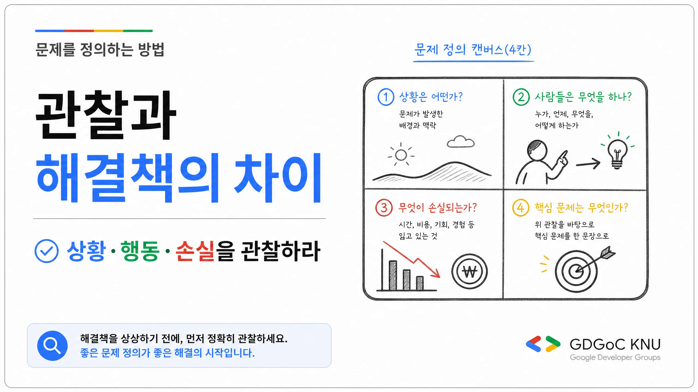
1–2단계
신입 부원은 첫 프로젝트에서 역할과 질문 방식을 몰라 대화를 시작하지 못한다.
첫 회의 안에 모든 팀원이 자신의 역할과 첫 작업을 설명한다.
모든 팀원이 자신이 맡은 결과물과 필요한 도움을 말할 수 있다.
역할 합의와 첫 작업 배정까지 확인한다.
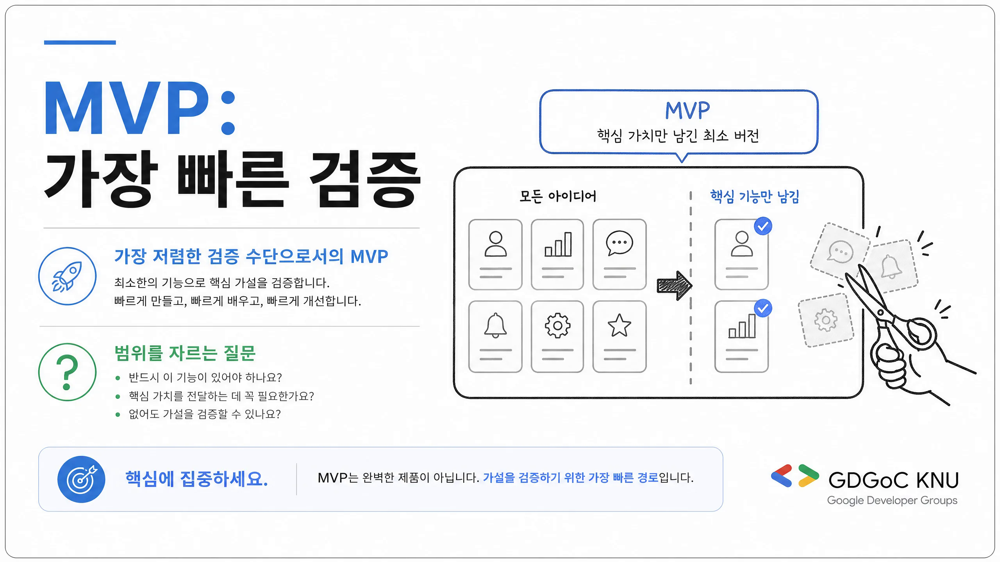
3단계
이 기능이 없어도 핵심 가설을 검증할 수 있는가? 그렇다면 이번 범위에서 제외합니다.
4단계
어떤 기술과 작업을 해봤나요?
이번 프로젝트에서 무엇을 배우고 싶나요?
혼자 해결하기 어려운 영역은 어디인가요?
언제, 일주일에 얼마나 참여할 수 있나요?
“백엔드 담당”보다 “방 생성 API와 재접속 처리 책임”이 명확합니다.
시간이 다른 팀의 일정
일정은 사람을 압박하는 표가 아니라 위험을 일찍 발견하는 기준입니다.
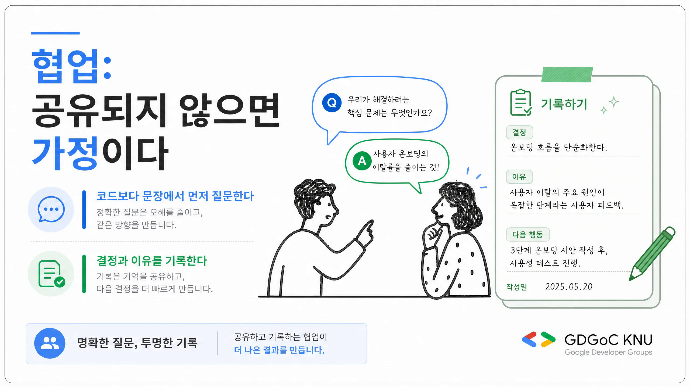
5–6단계
문제 · 범위 · 담당자 · 의존 관계 · 완료 조건
변경 파일 · 구현 순서 · 위험 · 테스트 · 리뷰 결정
현재 상태 · 막힘 · 필요한 도움 · 다음 확인 시점
AI라는 빠른 팀원
“로그인 기능을 구현하고 관련 코드를 전체적으로 정리해줘.”
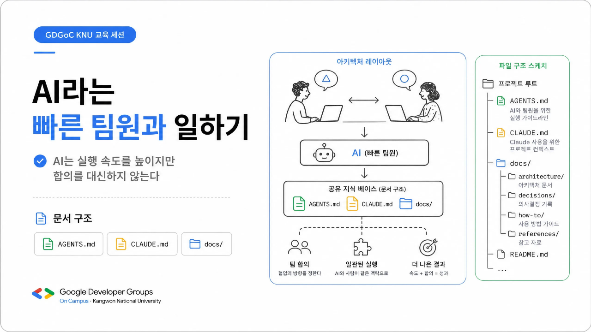
공유 지식 구조
AGENTS.md와 CLAUDE.md는 공통 문서를 안내하는 짧은 진입점으로 사용합니다.
AGENTS.md
CLAUDE.md
docs/
├── team/
│ ├── product-goal.md
│ ├── architecture.md
│ ├── coding-convention.md
│ ├── definition-of-done.md
│ └── ai-collaboration.md
└── plans/
└── issue-123-example.md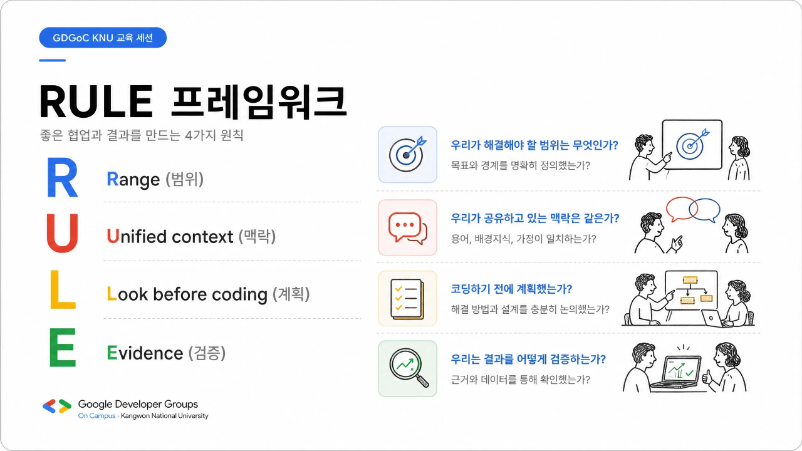
AI 작업 전 네 가지 질문
AI 협업 작업 흐름
PR 작성자는 AI가 만든 코드도 변경 이유와 검증 방법을 설명할 수 있어야 합니다.
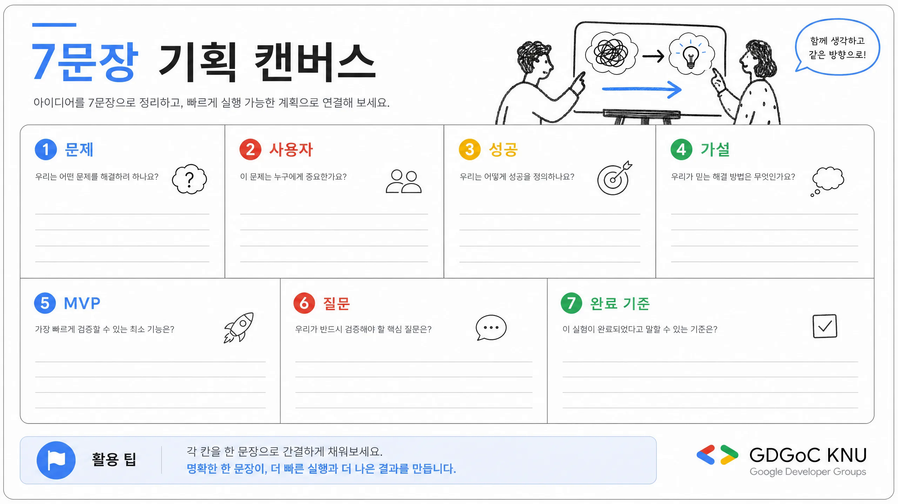
프로젝트 시작 캔버스 1/2
프로젝트 시작 캔버스 2/2
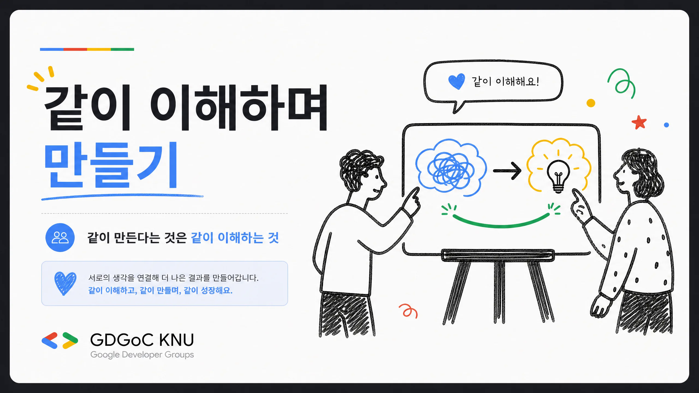
GDGoC KNU 교육 세션
“무엇을 만들까?” 전에
“무엇을 함께 이해해야 할까?”
같이 만든다는 것은 같이 이해하는 과정입니다.